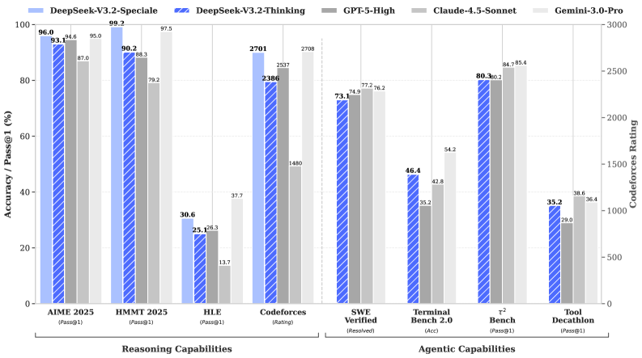
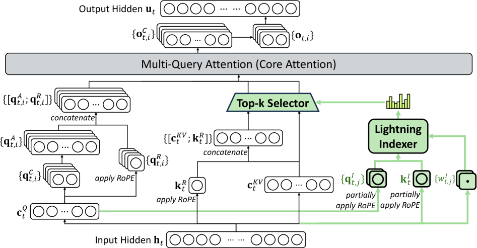
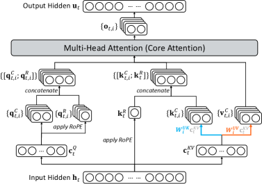
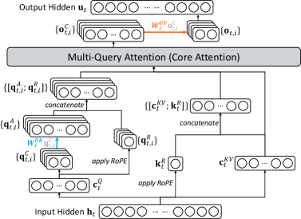
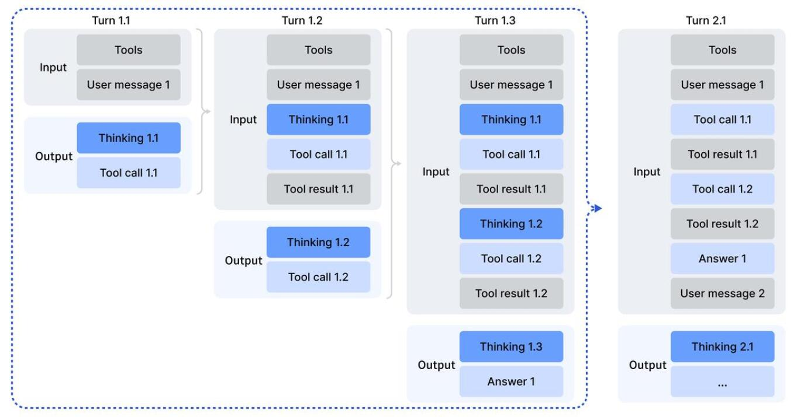

用稀疏注意力换效率、用扩展强化学习换推理、用大规模合成换智能体能力——在更低成本下逼近 GPT-5 与 Gemini-3.0-Pro。
开源模型与闭源前沿的差距正在拉大。DeepSeek-V3.2 把这归结为三个短板——长序列注意力太贵、后训练算力投入不足、智能体泛化能力弱，并分别给出解法。
① DeepSeek 稀疏注意力 (DSA)：用一个轻量「索引器」为每个 query 只挑出 top-k 个最相关的历史 token 做注意力，把核心复杂度从 O(L²) 降到 O(Lk)，长上下文几乎不掉点。② 可扩展 RL：把后训练算力堆到超过预训练的 10%，配套一整套稳定 GRPO 的技巧，性能追平 GPT-5。③ 大规模智能体任务合成：自动造出 1,800+ 环境、85,000 条复杂指令，让模型学会「在推理中调用工具」。
高算力变体 DeepSeek-V3.2-Speciale 更进一步，在 IMO / IOI / ICPC World Final / CMO 2025 全部拿到金牌级成绩。

轻量索引器 + top-k 选择，长序列注意力从平方级降到近线性，长上下文不掉点。
稳定 GRPO 的四项技巧，把后训练算力扩到 >10% 预训练，推理追平 GPT-5。
自动生成「难解但易验证」的环境与任务，让推理与工具调用融为一体。
问题定义
自 o1、DeepSeek-R1 之后，推理模型让 LLM 在可验证领域大幅跃进。但过去几个月出现了分化：闭源专有模型（GPT-5、Claude-4.5、Gemini-3.0）的进步速度明显更快，开源与闭源的差距不是在收敛，而是在拉大。
作者把这种落后拆成三个具体短板，并让全文的三大贡献逐一对应：
主流模型仍依赖标准注意力，其计算量随序列长度平方增长。这不仅推高长文本的推理成本，也限制了在长序列上做大规模后训练的可行性。对应解法：DeepSeek 稀疏注意力 (DSA)。
开源模型普遍在后训练阶段算力投入偏低，导致在硬任务上能力受限。本文把后训练算力预算提升到超过预训练成本的 10%，并设计稳定的 RL 协议让算力能持续扩展。对应解法：Scaling GRPO。
在 AI Agent 场景（MCP-Universe、MCP-Mark、Tool-Decathlon 等长尾任务）中，开源模型的泛化与指令遵循能力明显落后，限制了真实落地效果。本文用冷启动 + 大规模智能体任务合成来补足。对应解法：智能体任务合成管线。
核心架构 · 重头戏
DSA 的目标很直接：长序列里大部分历史 token 对当前 query 其实不重要，那就只挑重要的算。它由两个组件组成：
h_t 和每个历史 token h_s 算一个相关性分数 I(t,s)。它 head 数很少、可用 FP8、激活函数选 ReLU（为吞吐考虑），所以「打分」这一步极其便宜。u_t。黑色块是当前 query token，灰色块是它前面的历史 token。点「下一步」跟着机制走一遍。

c_t^Q 生成 q^C，再拼上经过 RoPE 的 q^R，得到完整的 query 表示 [q^A; q^R]。c^KV 与位置编码 k^R 拼接，作为候选的 key-value 条目集合。u_t。DSA 不是从零训练，而是从 DeepSeek-V3.1-Terminus（已扩到 128K 上下文）的 checkpoint 出发，做继续预训练。分两阶段：
先保持稠密注意力，冻结模型其余全部参数，只训练闪电索引器。做法：把主注意力所有 head 的分数求和、沿序列做 L1 归一化得到目标分布 p(t,:)，再让索引器输出去拟合它——优化目标是 KL 散度损失。
学习率 1e-3，只训 1000 步，每步 16 条 128K 序列，合计约 2.1B tokens。目的只是给索引器一个好的初始化。
引入细粒度 token 选择，放开全部参数让模型适应 DSA 的稀疏模式。索引器仍对齐主注意力分布，但只在被选中的 token 集合 S_t 上算 KL。
关键工程细节：索引器的输入从计算图中 detach，单独优化——索引器只吃 KL 损失的梯度，主模型只吃语言建模损失。学习率 7.3e-6，每个 query 选 2048 个 key-value token，主模型与索引器一起训 15000 步，合计约 943.7B tokens。
DSA 把主模型的核心注意力复杂度从 O(L²) 降到 O(Lk)（k≪L）。索引器本身仍是 O(L²)，但计算量远小于原 MLA，配合优化实现，长上下文端到端显著提速。
作者在 2025 年 9 月用一套覆盖多种能力的基准评测了 V3.2-Exp，并与 V3.1-Terminus 对比：效率大幅提升的同时，短/长上下文任务都没有明显性能退化。ChatBot Arena 的 Elo（2025-11-10）也与上一代基本持平；独立的长上下文评测（AA-LCR、Fiction.liveBench）甚至略有提升。
MLA 可以在 MHA 模式与 MQA 模式之间转换。对 V3.1-Terminus 而言，训练与 prefilling 用 MHA 模式，decoding 用 MQA 模式。DSA 选择基于 MQA 模式实例化，因为此时每个潜向量（key-value 条目）被所有 query head 共享，最契合核函数层面「一个条目供多 query 复用」的效率要求。


后训练 · 把算力堆起来
后训练流程沿用 V3.2-Exp：专家蒸馏（Specialist Distillation）+ 混合 RL 训练。先为每个领域（数学、编程、通用逻辑推理、通用智能体、智能体编程、智能体搜索）从同一个 base checkpoint 微调出专精模型，再用它们产出领域数据喂给最终模型。实验显示，蒸馏数据训练出的模型只比专精模型略差，这点差距会被后续 RL 抹平。
RL 算法采用 GRPO，把推理、智能体、人类对齐合并进一个 RL 阶段，既平衡多领域表现，又避免多阶段训练常见的灾难性遗忘。在此基础上，作者给出四项稳定大规模 RL 的关键技巧：
原始 K3 估计器在「采样 token 在当前策略下概率远低于参考策略」时，会给这些 token 分配过大、无界的梯度权重，导致噪声更新累积、训练不稳。作者用当前策略与旧策略之间的重要性采样比修正 K3，使 KL 估计器的梯度无偏，消除系统性误差。实践中发现不同领域适合不同强度的 KL 正则——例如数学，弱 KL 甚至不加反而更好。
为效率，rollout 通常一大批生成后切成多个 mini-batch 做多步更新，这天然引入 off-policy；推理框架与训练框架的实现差异又会加剧。作者在 GRPO loss 里加一个二值 mask：当某序列的优势为负、且与采样策略的 KL 偏离超过阈值 δ 时就屏蔽它。直觉是——模型从自己的错误里学最有用，但「高度偏离的负样本」会误导甚至破坏优化。注意只屏蔽负优势序列。
MoE 只激活部分专家。但推理与训练框架的差异加上参数更新，会让同一输入在推理/训练时路由到不同专家，造成激活参数子空间突变，破坏优化、放大 off-policy。解法：把采样时（推理框架）用的专家路由路径保存下来，训练时强制走同样的路由，确保优化的是同一批专家参数。这项操作自 V3-0324 起就被证明对 MoE 的 RL 稳定性至关重要。
top-p / top-k 采样能避免选到极低概率 token，但会让旧策略与当前策略的动作空间不一致，违反重要性采样前提、破坏稳定。解法：把采样时的截断掩码保存下来，训练时应用到当前策略，确保两者共享相同的动作子空间。实验发现 top-p + Keep Sampling Mask 能有效保持 RL 训练中的语言一致性。
DeepSeek-V3.2（正式版）整合了从专家蒸馏来的推理、智能体、人类对齐数据，经数千步继续 RL 得到最终 checkpoint——它在训练时用了长度惩罚奖励来压缩输出、优化成本/延迟。
DeepSeek-V3.2-Speciale 是探索「延长思考」上限的实验变体：只用推理数据训练、降低长度惩罚，并引入 DeepSeekMath-V2 的数据与奖励方法强化数学证明能力。代价是 token 效率明显更低，但换来更强的推理上限。
后训练 · 让推理走进工具调用
DeepSeek-R1 证明了「思考」能显著提升解难题的能力。本文要把思考能力带进工具调用场景，关键有三块：思考的上下文管理、冷启动、大规模智能体任务。
直接照搬 R1 的策略（第二轮消息一来就丢掉推理内容）会造成严重的 token 浪费——模型被迫为每次工具调用把整个问题重新推理一遍。本文为工具调用量身定制了上下文管理规则：

手头已有「非智能体的推理数据」和「无推理的智能体数据」。冷启动的思路是：相信模型有能力遵循明确指令，于是用精心设计的 system prompt，把工具执行嵌进推理过程。这样虽然「推理中调工具」的模式还不稳健，但模型偶尔能产出理想轨迹，为后续 RL 提供了起点。
(1) 纯推理：要求模型用 <think></think> 标签包住推理过程，标签后再给最终答案。
(2) 智能体（无推理）：system prompt 里给出工具说明 {TOOL-DESCRIPTIONS} 和调用格式 {TOOLCALL-FORMAT}，模型直接多轮调用工具。
(3) 推理中调工具（本文目标形态）：允许在 <think> 内多次调用 Python 工具（最多 20 次代码执行），鼓励「让代码干重活、推理保持简洁」，最终答案里不再调用工具。
多样化的 RL 任务对鲁棒性至关重要。搜索、代码工程、代码解释这类用真实工具（真实搜索 API、编码工具、Jupyter）；其余任务的环境与提示都合成构造。四类智能体任务规模如下：
| 任务类型 | 任务数量 | 环境 | 提示来源 |
|---|---|---|---|
| 代码智能体 Code agent | 24,667 | 真实 | 抽取 |
| 搜索智能体 Search agent | 50,275 | 真实 | 合成 |
| 通用智能体 General agent | 4,417 | 合成 | 合成 |
| 代码解释器 Code interpreter | 5,908 | 真实 | 抽取 |
先从大规模网络语料采样有信息量的长尾实体；提问智能体用可配置深度/广度的搜索工具探索实体、凝练成 QA 对；多个异构配置的作答智能体产出多样候选；带搜索能力的验证智能体多遍校验，只保留「真值正确、且所有候选都可验证为错」的样本。再混入对搜索确有帮助的 helpful 数据，并用生成式奖励模型按多维 rubric 打分，兼顾事实可靠性与实用帮助度。
从 GitHub 挖掘数百万 issue-PR 对，用启发式规则 + LLM 判断严格过滤，要求每条含合理 issue 描述、相关 gold patch、验证用 test patch。自动化环境搭建智能体负责装包、解依赖、跑测试，结果以 JUnit 格式输出。只有当打上 gold patch 后 F2P（fail→pass）测试数非零、且 P2F（pass→fail）为零（即修好了且无回归）才算环境搭建成功。最终建成数万个可复现的 issue 修复环境，覆盖 Python/Java/JS/TS/C/C++/Go/PHP。
用自动环境合成智能体造出 1,827 个面向任务的环境。流程：给定任务类别（如规划行程）和带 bash/搜索工具的沙盒，智能体先取数据存进沙盒数据库；再合成一组任务专用工具（每个是一个函数）；然后提出一个简单任务连同 Python 实现的解函数与验证函数——解函数只能调用工具或做逻辑计算、不能直接访问数据库，保证任务只能经工具接口解决；若解未通过验证就反复修正，再迭代加大难度、必要时扩充工具集。
最终得到数千个 ⟨环境, 工具, 任务, 验证器⟩ 元组，用 V3.2 做 RL 并只保留 pass@100 非零的实例，得到 1,827 个环境、共 4,417 个任务。核心直觉：在巨大组合空间里找出满足所有约束的解很难，但检查一个候选解是否满足约束却相对容易。
这是一个典型的合成任务：从杭州出发的三天行程（10/1–10/3），约束层层嵌套——不能重复城市/酒店/景点/餐厅；推荐项必须真实位于当天所在城市；第二天还有条件式预算规则：
模型需通过一组工具函数（get_all_hotels_by_city、get_infos_by_restaurant、get_inter_city_transport、submit_result 等十余个）查询数据并提交结构化 JSON 结果：
[
{"time": "2025-10-01", "city": "...",
"hotel": "...", "afternoon_restaurant": "...",
"afternoon_attraction": "...", "evening_restaurant": "..."},
{ ... 10-02 ... },
{ ... 10-03 ... }
]
这个例子很好地说明了为什么「合成任务」适合 RL：搜索可行解需要在庞大组合空间里满足全部约束（难），但给定候选解逐条核对约束（易验证）——天然提供可靠奖励信号。
实验结论 · 轻量速览
评测温度设 1.0、上下文 128K，工具类基准用标准 function call 格式、模型置于思考模式。下表挑选有代表性的几项（DeepSeek-V3.2 为思考模式，高亮列）：
| 基准 (指标) | Claude-4.5 Sonnet | GPT-5 High | Gemini-3.0 Pro | Kimi-K2 Thinking | DeepSeek V3.2 |
|---|---|---|---|---|---|
| GPQA Diamond | 83.4 | 85.7 | 91.9 | 84.5 | 82.4 |
| HLE (text) | 13.7 | 26.3 | 37.7 | 23.9 | 25.1 |
| AIME 2025 | 87.0 | 94.6 | 95.0 | 94.5 | 93.1 |
| HMMT Feb 2025 | 79.2 | 88.3 | 97.5 | 89.4 | 92.5 |
| LiveCodeBench | 64.0 | 84.5 | 90.7 | 82.6 | 83.3 |
| SWE Verified | 77.2 | 74.9 | 76.2 | 71.3 | 73.1 |
| SWE Multilingual | 68.0 | 55.3 | — | 61.1 | 70.2 |
| BrowseComp | 24.1 | 54.9 | — | 60.2* | 67.6* |
| τ²-Bench | 84.7 | 80.2 | 85.4 | 74.3 | 80.3 |
| Tool-Decathlon | 38.6 | 29.0 | 36.4 | 17.6 | 35.2 |
放开长度限制后，Speciale 用更多推理 token 在多个基准上超过 Gemini-3.0-Pro。它在四大顶级竞赛上拿到金牌级成绩（无针对性训练）：
同时，Speciale 也展示了「用 token 换分数」的代价。下表对比准确率与输出 token 量（千）：
| 基准 | GPT-5 High | Gemini-3.0 Pro | V3.2 Thinking | V3.2 Speciale |
|---|---|---|---|---|
| AIME 2025 | 94.6 (13k) | 95.0 (15k) | 93.1 (16k) | 96.0 (23k) |
| HMMT Feb 2025 | 88.3 (16k) | 97.5 (16k) | 92.5 (19k) | 99.2 (27k) |
| HMMT Nov 2025 | 89.2 (20k) | 93.3 (15k) | 90.2 (18k) | 94.4 (25k) |
| CodeForces | 2537 (29k) | 2708 (22k) | 2386 (42k) | 2701 (77k) |
| HLE | 26.3 (15k) | 37.7 (15k) | 25.1 (21k) | 30.6 (35k) |
Speciale 分数更高，但 token 效率显著不如 Gemini-3.0-Pro。为压低部署成本与延迟，正式版 V3.2 才施加了更严的 token 约束来平衡性能与成本——token 效率仍是重要的未来方向。
作者问两个问题，并给出干净的答案：
即便有 128K 上下文，搜索类智能体仍常因超长被截断。作者在 token 用量超过窗口 80% 时引入上下文管理来扩展预算（图 6）：
局限与未来
作者很诚实地列出与 Gemini-3.0-Pro 等前沿闭源相比的差距：
总训练 FLOPs 更少，知识广度仍落后；计划通过扩大预训练算力来弥补。
通常要更长的生成轨迹才能匹配 Gemini-3.0-Pro 的输出质量；未来聚焦提升推理链的「智能密度」。
最难的复杂任务上仍不及前沿模型，需进一步打磨基座与后训练配方。
总体而言，DeepSeek-V3.2 用 DSA 解决了长上下文的计算复杂度而不牺牲性能，用扩展 RL 把推理追到 GPT-5 水平，用大规模智能体合成显著增强了工具使用能力；而 Speciale 的 IMO/IOI 金牌，为开源大模型立下了一个新的里程碑。